DESCRIPTION OF COMPONENTS
- Path
- Descriptions > 10 ENGINE > 1060 DIESEL FUEL INJECTION SYSTEM > 1060G DIESEL INJECTION PRESSURE PUMP ELECTRONIC CONTROL > DESCRIPTION OF COMPONENTS
- Kind
- system description
- Applies to
- engines: 2.4 JTD 10V; all production periods
- Interactive page
- https://sloeber94.github.io/elrnDB-lThss/en/#/628017
Applies to: engines: 2.4 JTD 10V; all production periods
ENGINE MANAGEMENT NODE (COMMON RAIL EDC-15C7 - 2.2)
Specifications
This is fitted on the left front side beneath the wheelarch. The Engine Control Node is 'flash e.p.r.o.m.' type, i.e. it can be reprogrammed externally without altering the hardware.
The Engine Control Node contains a built-in absolute pressure sensor.
Pin out
- 1. Earth
- 2. Earth
- 3. Earth
- 4. Actuator power supply
- 5. Injector/ECU power supply
- 6. Not connected
- 7. Not connected
- 8. +30 Power supply
- 9. CAN L
- 10. CAN H
- 11. Not connected
- 12. Not connected
- 13. Pin 85 injection relay
- 14. EGR cooler relay
- 15. Borg-Warner valve actuator
- 16. EGR actuator
- 17. Wastegate actuator
- 18. Pin 85 air conditioner relay
- 19. Pin 85 2nd fan speed activation
- 20. Pin 85 1st fan speed activation
- 21. Pin 85 supplementary heater relay
- 22. Spark plug activation
- 23. Not connected
- 24. Pin 85 fuel pump relay
- 25. Not connected
- 26. Not connected
- 27. Not connected
- 28. CAN L
- 29. CAN H
- 30. Not connected
- 31. Not connected
- 32. Not connected
- 33. Not connected
- 34. Not connected
- 35. Not connected
- 36. Not connected
- 37. Not connected
- 38. Not connected
- 39. Not connected
- 40. Not connected
- 41. Not connected
- 42. Not connected
- 43. Not connected
- 44. Digital input 1
- 45. Not connected
- 46. Not connected
- 47. Engine rpm output signal
- 48. K line
- 49. Vehicle speed input
- 50. Digital input 2
- 51. Quadrinary on
- 52. Trinary on
- 53. Not connected
- 54. Not connected
- 55. Not connected
- 56. Not connected
- 57. Not connected
- 58. Key sense
- 59. Brake pedal switch
- 60. Air conditioner activation request
- 61. Clutch pedal switch
- 62. Spark plug diagnostics
- 63. Not connected
- 64. Not connected
- 65. Not connected
- 66. Not connected
- 67. Not connected
- 68. Analogue sensor 5
- 69. Analogue sensor 5
- 70. Analogue sensor 3
- 71. Analogue sensor 3
- 72. Not connected
- 73. Not connected
- 74. Analogue sensor 1
- 75. Analogue sensor 1
- 76. Accelerator pedal earth 1
- 77. Accelerator pedal signal 1
- 78. Accelerator pedal power supply 1
- 79. Accelerator pedal earth 2
- 80. Accelerator pedal signal 2
- 81. Accelerator pedal power supply 2
- 82. Fuel temperature sensor - pin 1
- 83. Fuel temperature sensor - pin 2
- 84. Coolant temperature sensor - pin 1
- 85. Coolant temperature sensor - pin 2
- 86. Air flow meter - pin 1
- 87. Not connected
- 88. Air flow meter - pin 3
- 89. Air flow meter - pin 5
- 90. Fuel pressure sensor - pin 3
- 91. Fuel pressure sensor - pin 2
- 92. Fuel pressure sensor - pin 1
- 93. Turbocharging pressure sensor - pin 1
- 94. Turbocharging pressure sensor - pin 3
- 95. Turbocharging pressure sensor - pin 2
- 96. Not connected
- 97. Air flow meter - pin 4
- 98. Engine oil pressure switch
- 99. RPM sensor - pin 1
- 100. RPM sensor - pin 2
- 101. RPM sensor - pin 3
- 102. Timing sensor - pin 1
- 103. Timing sensor - pin 2
- 104. Timing sensor - pin 3
- 105. Feedback position swirl
- 106. Sensor power supply output
- 107. Variable swirl position
- 108. Diesel pressure regulator
- 109. Diesel pressure regulator
- 110. Variable swirl position
- 111. Element shut off valve
- 112. Not connected
- 113. Not connected
- 114. Cylinder 4 injector control
- 116. Not connected
- 117. Cylinder 1-2 injector shared
- 118. Cylinder 3-4 injector shared
- 119. Cylinder 1 injector control
- 120. Cylinder 2 injector control
- 121. Cylinder 3 injector control
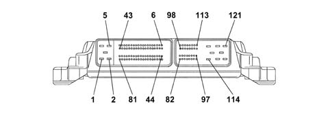
RPM SENSOR
Specifications
Type
This is fitted on the crankcase and faces the phonic wheel postioned on the crankshaft.
It is inductive type, i.e. its operation is determined by magnetic field changes generated by the teeth passing in front of the phonic wheel (60-2 teeth).
The Engine Control Node uses the rpm sensor signal to:
- determine speed of rotation
- determine angular crankshaft position.
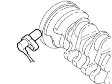
Operation
General remarks
The changeover from full to empty determined by the presence or absence of a gap brings about a magnetic flux change sufficient to generate an induced alternating voltage proportional to the number of teeth on the ring (or phonic wheel).
The frequency and amplitude of the voltage directed to the Engine Control Node supplies the node with an engine angular speed measurement.
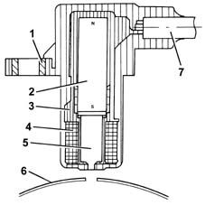
- 1. Brass bush
- 2. Permanent magnet
- 3. Plastic sensor casing
- 4. Coil reel
- 5. Polar core
- 6. Ring gear or flywheel
- 7. Coaxial paired cable or electrical connection.
The recommended distance (gap) between the end of the sensor and the flywheel for obtaining correct signals should be 0.8 - 1.5 mm
This distance is not adjustable. If the gap is found to be outside the tolerance limits, check the condition of the sensor and phonic wheel.
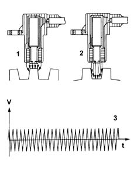
- 1. Maximum magnetic flow
- 2. Minimum magnetic flow
- 3. Induced alternating voltage plot
CAM ANGLE SENSOR
Specifications
Type
This Hall effect sensor is fitted to the cylinder head and faces the camshaft drive pulley.
A slot on the pulley allows the timing sensor to indicate engine timing position.
The Engine Control Node uses the timing sensor signal to identify T.D.C. at the end of compression.
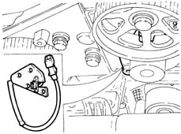
Operation
General remarks
A current-carrying semiconductor layer immersed in a normal magnetic field (force lines at right angles to current direction) generates a potential difference known as a Hall voltage at its terminals.
If current intensity remains constant, the generated voltage depends on magnetic field intensity alone. Periodic changes in magnetic field intensity are sufficient to generate a modulated electrical signal with frequency proportional to the speed of magnetic field change.
This change is achieved by making a magnetic ring (internal part of pulley) with an opening pass the sensor.
As it moves, the metal part of the ring covers the sensor to block the magnetic field and thus generate a low ouput signal. Conversely, the sensor generates a high signal when the opening is over the sensor and a magnetic field is present.
Together with the rpm and TDC signal, this signal allows the Engine Control Node to identify the cylinders and determine injection point.
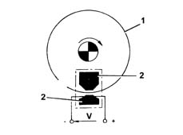
- 1. Pulley ring
- 2. Magnetic material
EXCESS PRESSURE SENSOR
Specifications
This is fitted in the centre of the intake chamber and sends the Engine Control Node information to enable it to:
- modulate injection pressure
- regulate fuel injection duration.
Pin out
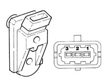
- 1 - 5V(from ECU)
- 2 - Earth
- 3 - Output signal
ENGINE COOLANT TEMPERATURE SENSOR
Specifications
Type
This is fitted to the thermostat cup and detects coolant temperature by means of a dual NTC thermistor with negative resistance coefficient.
the NTC thermistor sends a signal to the Engine Control Node, which sends a signal to the injector and instrument panel warning light.
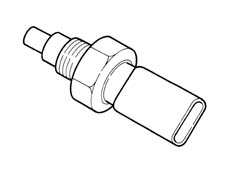
The sensor is designed using semiconductor technology. In other words, the resistance level drops if sensor element temperature increases with increasing coolant temperature.
Because the resistance does not change in linear fashion as temperature increases, it is relatively higher at low temperatures than at high temperatures.
AIR FLOW METER WITH BUILT IN AIR TEMPERATURE SENSOR
Specifications
Type
The debimeter is located on the air intake sleeve and is hot film type.
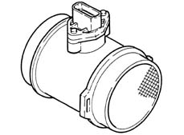
The intake air temperature sensor is built into the debimeter.
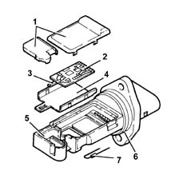
- 1. Covers
- 2. Electronic card
- 3. Sensor
- 4. Support plate
- 5. Support
- 6. O - Ring seal
- 7. Temperature sensor
Operation
The principle of operation is based on a heated membrane positioned within a measurement channel that carries air into the engine.
The hot film membrane is maintained at constant temperature (about 120°C higher than the incoming air temperature) by the heating coil.
The air mass that flows through the measurement channel tends to remove heat from the membrane. Current must therefore flow through the coil to maintain the membrane at a constant temperature.
This current is measured by a special Wheatstone bridge.
The current is therefore proportional to the flowing air mass.
The flowmeter measures the air mass directly (not the volume) to eliminate problems of temperature, altitude, pressure etc.
FUEL TEMPERATURE SENSOR
Specifications
Type
This is fitted to the return manifold and detects fuel temperature by means of a dual NTC thermistor with negative resistance coefficient.
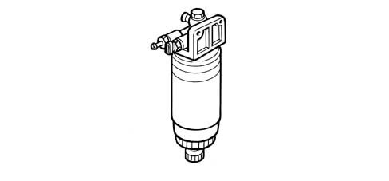
The sensor is designed using semiconductor technology. In other words, the resistance level drops if sensor element temperature increases with increasing fuel emperature.
Because the resistance does not change in linear fashion as temperature increases, it is relatively higher at low temperatures than at high temperatures.
FUEL PRESSURE SENSOR
Specifications
Type
This is fitted in the centre of the single fuel manifold rail and its function is to provide the Engine Control Node with a feed back signal to enable it to:
- modulate injection pressure
- regulate fuel injection duration.
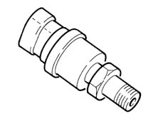
ACCELERATOR PEDAL POTENTIOMETER
Specifications
Type
The accelerator pedal is equipped with two built-in potentiometers:
- a main potentiometer
- a safety potentiometer.
The Engine Control Node implements the following recovery strategies.
- if one of the two potentiometers fails, this allows the throttle to be opened to a maximum of 40° over a long time period;
- if both potentiometers fail completely, it prevents throttle opening.
Operation
General remarks
The sensor consists of a case secured to the pedal unit by bolts. The case contains an axially-located shaft connected to two potetiometers.
A coil spring on the shaft ensures the correct amount of resistance to pressure while a second spring ensures return following release.
Operating field from 0° to 70°; mechanical stop at 88°.